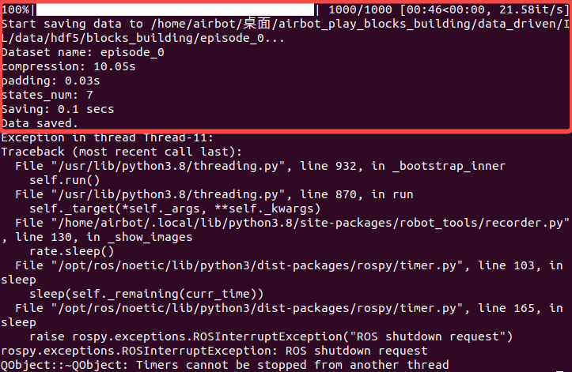
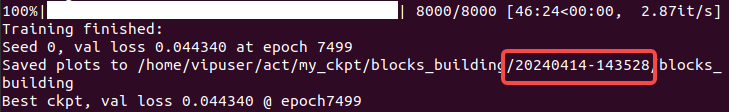
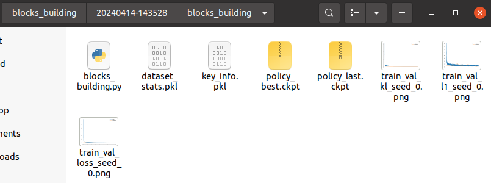
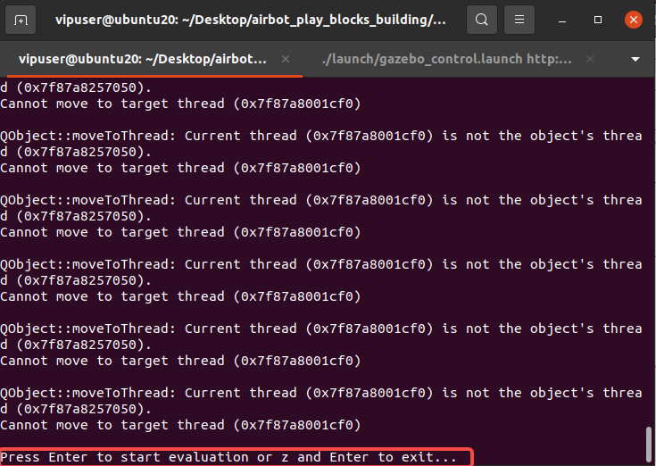
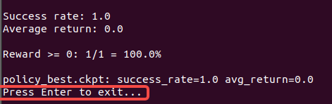

1. 预备知识
- 回顾参考： AIRBOT_Play搭积木实验手册-Gazebo版。
2. 实验设备
-
一台已经配置好软件环境或装有Docker环境的支持GPU的主机或云服务器。
-
鼠标、键盘等外设。
3. 实验目标
-
了解“模仿学习”方法中数据采集，模型训练、推理等基本过程。
-
基于“模仿学习”进行搭积木仿真。
-
思考“模仿学习”方法可能存在的问题。
4. 效果展示
5. 实验步骤
5.1 数据采集
5.1.1 分步采集
在airbot_play_blocks_building目录下开启4个终端备用。
在终端1中执行如下命令启动仿真：
在终端2中依次执行如下2条命令开启记录数据程序（下面第一行命令是让终端先进入data_driven文件夹中）：
-mts 1000：该次数据采集的持续时间为1000 steps（采样频率默认为25Hz）。
-on episode_0：采集的数据保存为名为episode_0的hdf5格式文件。
待仿真启动完毕后，在终端3中执行如下命令启动控制程序：
待机械臂到达抓取位姿后，在终端4中执行如下命令启动视觉识别程序：
随后，搭积木任务将开始，同时数据采集程序将启动，可以在终端2中看到数据采集的进度条。此时，注意观察积木搭建结束时（第二个物块被放好且机械臂松开夹爪）对应的时间步，可以将该时间步替换默认-mts 1000中的1000参数，后续采集的所有数据均需使用该时间步参数。采集结束后，终端2中正常将看到如下内容，其中红框内为本次数据采集的相关信息：

可以尝试调整不同控制参数采集多组数据。
5.1.2 自动采集
上述分步采集需要人手动依次采集，效率较低，可以通过自动化脚本完成自动采集。
退出上述所有终端，然后在终端1（该终端位于airbot_play_blocks_building目录下）中执行如下命令启动自动采集数据程序：
-se 0 -ee 99：指定了数据从第0次采集到第99次，共采集100次数据。建议至少采集50组数据，保证数据规模足够。
-picp 70 85和-plcp 90 110：相当于分别给./run_pick_place.sh go 85 101命令中的两个参数设置了随机区间，每次采集时将在区间内随机选取一个值作为参数，这样可以保证采集的数据的多样性。
每次采集大约需要1分钟多的时间，采集50组数据大约需要1小时（具体时间受电脑性能影响可能有较大波动）。
5.2 数据重放
采集完的数据可以通过重放进行查看。
在airbot_play_blocks_building/data_driven目录下开启1个终端（或使用上述终端2）。
-
执行如下命令重放图片记录（-ei 0指定回放了第0次采集的数据，下同）：
-
执行如下命令重放动作记录（注：需要先启动仿真程序，否则将看不到仿真中的动作执行效果）：
5.3 模型训练
采集完成的数据可以用于训练模仿学习模型（注：模型训练和推理需要用到GPU，无法在虚拟机中进行，感兴趣的同学可联系助教申请使用云服务器进行尝试）。
在airbot_play_blocks_building/data_driven/IL目录下开启1个终端，然后执行如下命令进行模型训练：
模型训练完成后，可以在终端看到类似如下信息：

其中说明了数据保存的路径信息，红框中为训练开始时的时间戳，该时间戳将用于后续模型推理时指定路径时使用，可以复制备用。可以在当前IL目录下的my_ckpt/blocks_building中看以看到诸如20240414-143528的时间戳文件夹，其中存放有训练结果文件，如：

5.4 模型推理
训练好获得模型（ckpt文件）后可以使用该模型进行推理。
首先在airbot_play_blocks_building目录下开启一个终端，然后执行如下命令启动仿真：
然后在airbot_play_blocks_building/data_driven/IL目录下开启另1个终端（或直接使用模型训练用的终端），执行如下命令进行模型推理（命令中最后两个参数需要注意修改：第一，-ts时间戳参数需要替换为上述训练结果中的值，否则会因无法找到模型而报错；第二，-mts参数用于指定推理过程持续的步数，当步数不足以完成任务时可以考虑增加该值，一般与采集数据的长度一致）：
等待一段时间初始化后将看到如下页面，其中下方红框中提示按下回车进行推理：

推理结束后同样有提示按下回车键退出，如下图红框中所示：

可以尝试多次推理（每次需重启仿真和推理程序），每次推理都可能会有不同的效果。